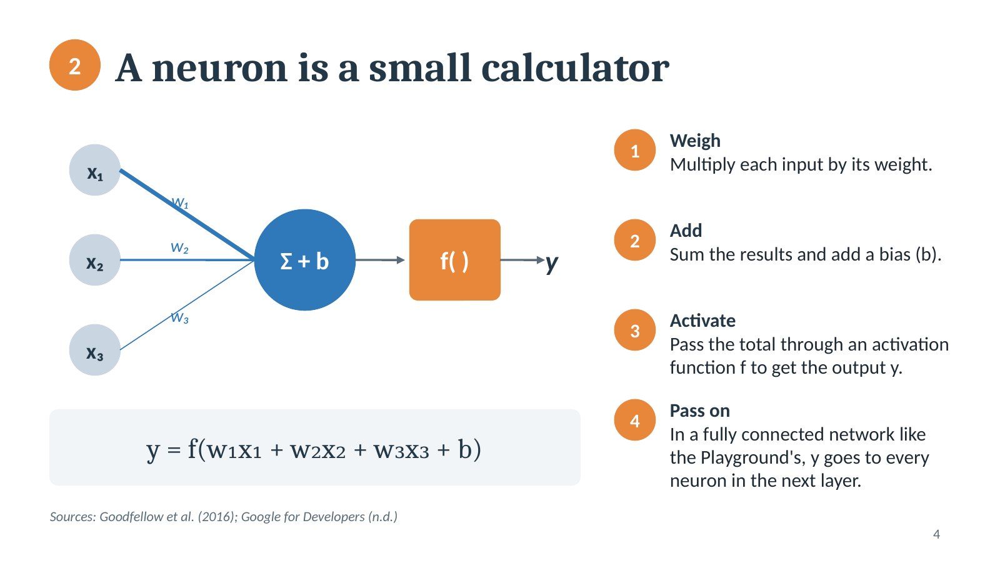
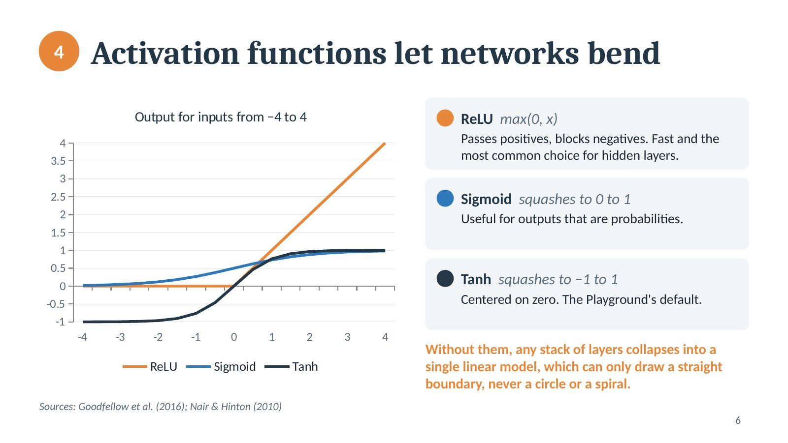
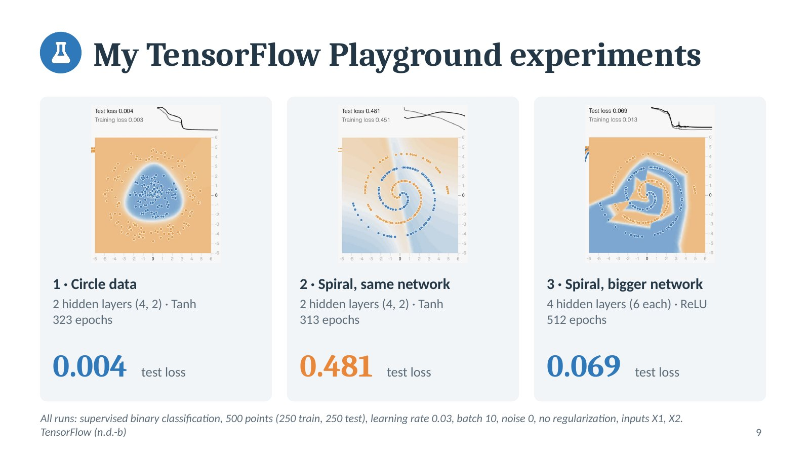
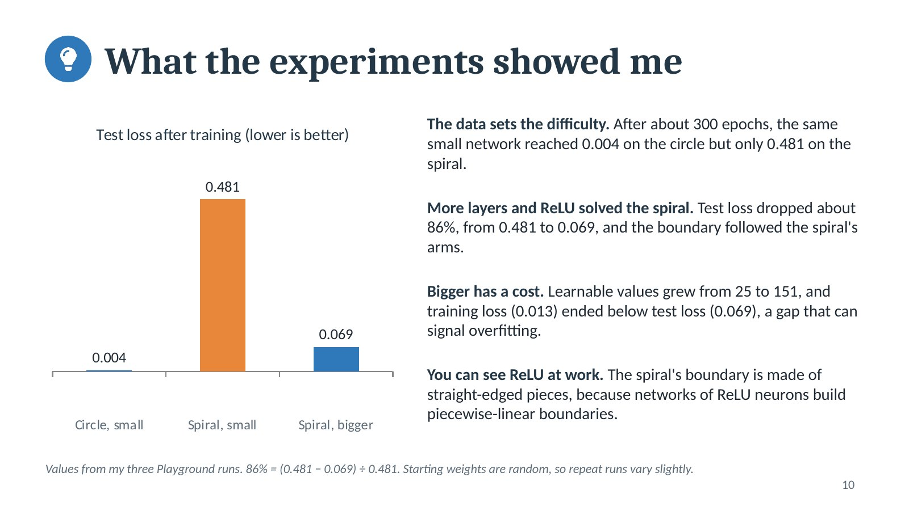

Introduction
This artifact is based on my AIML-501 Model Development portfolio assignment on neural network components.
Neural networks power image recognition, language tools, and prediction systems, yet their inner workings often feel like a black box. This presentation opens that box one component at a time, so that technical and non-technical audiences can see what each part does and why it matters.
Description
The presentation defines and illustrates layers, neurons, weights, activation functions, loss functions, and optimization algorithms. It opens with an architecture diagram of data flowing from the input layer through hidden layers to the output layer, then gives each component its own slide with a visual and a concise explanation.
Two slides document three experiments I ran in the TensorFlow Playground on a supervised binary classification task, comparing a small network on circle and spiral data with a deeper ReLU network. A summary slide closes with why visualizing neural networks matters and the key insights I gained. Unlike Artifact 3, which gives a general overview of how networks learn, this artifact is a component-by-component reference supported by measured results.

Neurons: each neuron weighs its inputs, adds a bias, and applies an activation function.

Activation functions: a chart of ReLU, sigmoid, and tanh shows how each one shapes a neuron's output.

Playground experiments: test loss of 0.004 on circle data, 0.481 on spiral data, and 0.069 with a deeper network.

Insights: the deeper ReLU network cut test loss by about 86% on the spiral data.
Objective
- Clearly define and describe the six key components of a neural network
- Visually illustrate the network's structure and how data flows through it
- Communicate complex neural network concepts concisely for a broad audience
- Connect the concepts to hands-on evidence from my own experiments
Process
- Trained models in the TensorFlow Playground, changing the dataset, the number of hidden layers and neurons, and the activation function
- Recorded three controlled runs with the same settings: 500 points split 250 for training and 250 for testing, learning rate 0.03, batch size 10, noise 0, no regularization, and inputs X1 and X2
- Read the Playground's official source code to confirm how it measures loss (average squared error), updates weights (mini-batch gradient descent), and starts its weights (random values between −0.5 and 0.5)
- Checked each component's definition against a deep learning textbook and the original research papers (see References)
- Designed one slide per component, each with a diagram, chart, or worked example instead of text alone
- Calculated chart values directly, such as squared-error loss and the number of learnable weights and biases
- Used the Playground's own blue and orange colors so the slides match what viewers see in the tool
- Exported the presentation as a PowerPoint file and a PDF for easy viewing
How to Repeat My Experiments
Each link opens the Playground with my exact settings. Click Play and pause at the epoch shown. Starting weights are random, so repeated runs give similar but not identical loss values.
- Experiment 1: circle data, hidden layers of 4 and 2, tanh, epoch 323, test loss 0.004
- Experiment 2: spiral data, hidden layers of 4 and 2, tanh, epoch 313, test loss 0.481
- Experiment 3: spiral data, four hidden layers of 6, ReLU, epoch 512, test loss 0.069
Tools and Technologies Used
Value Proposition
This presentation turns six abstract components into a clear visual story that can be followed in a few minutes. It shows that I can explain how neural networks work, test ideas with hands-on experiments, and present the results professionally.
Unique Value: Each concept is tied to measured evidence. The slides do not just define components; they show what changed when I altered the data, depth, and activation function in a real model.
Relevance: Useful for AI and data analytics roles, where professionals must explain why a model succeeds or fails and choose the right network size for the data.
References
Goodfellow, I., Bengio, Y., & Courville, A. (2016). Deep learning. MIT Press. https://www.deeplearningbook.org/
Google for Developers. (n.d.). Neural networks. Machine Learning Crash Course. https://developers.google.com/machine-learning/crash-course/neural-networks
Kingma, D. P., & Ba, J. (2015). Adam: A method for stochastic optimization. In 3rd International Conference on Learning Representations. https://doi.org/10.48550/arXiv.1412.6980
Nair, V., & Hinton, G. E. (2010). Rectified linear units improve restricted Boltzmann machines. In Proceedings of the 27th International Conference on Machine Learning (pp. 807–814).
Rumelhart, D. E., Hinton, G. E., & Williams, R. J. (1986). Learning representations by back-propagating errors. Nature, 323(6088), 533–536. https://doi.org/10.1038/323533a0
Smilkov, D., Carter, S., Sculley, D., Viégas, F. B., & Wattenberg, M. (2017). Direct-manipulation visualization of deep networks (arXiv:1708.03788). arXiv. https://doi.org/10.48550/arXiv.1708.03788
TensorFlow. (n.d.-a). Playground [Source code]. GitHub. https://github.com/tensorflow/playground
TensorFlow. (n.d.-b). A neural network playground [Online tool]. https://playground.tensorflow.org/